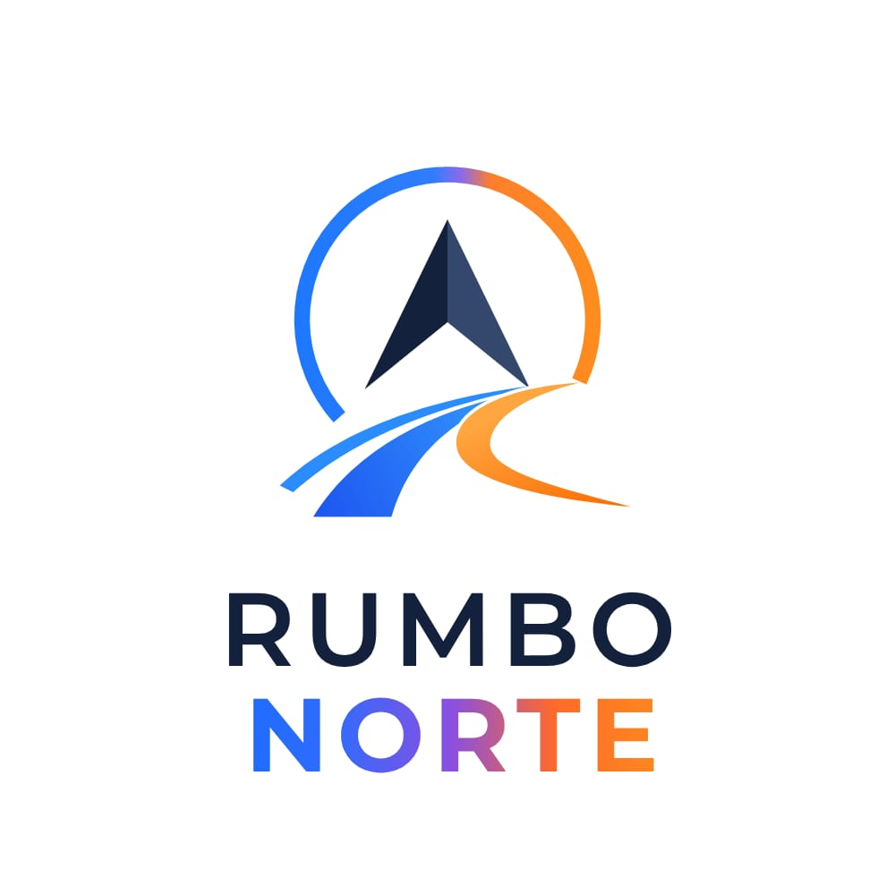

Manual de marca · versión 4
Rumbo Norte
Reclutamiento en español para trabajar en Países Bajos, Bélgica y Alemania. Un rumbo definido, con información clara antes de dar el paso.
El nombre
El siguiente paso tiene un rumbo.
Rumbo Norte une la orientación de la brújula con el camino hacia una nueva etapa laboral en el norte de Europa.
En los textos se escribe Rumbo Norte, con mayúsculas iniciales. En el logotipo, RUMBO NORTE, en dos líneas, tal como aparece en el original.
La firma sigue siendo «Reclutamiento sin promesas»: condiciones concretas, fuentes oficiales y atención personal. La dirección web y el correo de contacto se configuran de forma independiente del nombre de marca.
El logotipo
Una brújula.
Un camino hacia el norte.
La flecha azul marino, el arco y las rutas azules y naranjas forman el símbolo. El degradado de NORTE une ambos colores.

Composición original, conservada íntegramente para piezas de marca.
Versión horizontal para la navegación: el símbolo y las letras proceden del original, sin redibujarlos.
Sobre fondos oscuros se utiliza una base blanca que conserva todos los colores del logotipo.

Adaptación vectorial del símbolo para pestañas e iconos pequeños.
No estirar ni alterar los colores o el degradado. Mantener espacio libre alrededor y una base blanca bajo la imagen original. La versión horizontal reorganiza el símbolo y el nombre para facilitar la lectura en pantallas pequeñas.
Color
Azul para avanzar.
Naranja para señalar el camino.
Blanco y azul hielo para las superficies, azul marino para el texto y azul para las acciones. El naranja acompaña al símbolo, las rutas y los pequeños detalles.
Los botones usan azul #245DE5 con texto blanco; los enlaces y sus estados, azul profundo #1949BA. El violeta #8652DB se reserva para el degradado. El naranja vivo se emplea como detalle gráfico, no como texto pequeño sobre blanco.
Tipografía
Lectura clara, carácter firme.
Manrope para titulares y DM Sans para textos, formularios y cifras. Las letras del logotipo se conservan en el archivo original.
Trabajo en el norte.
Manrope, ExtraBold 800.
Antes de presentarte a nadie te cuento cuánto te queda limpio, qué te cobran por la habitación y cómo comprobar que la agencia es legal.
DM Sans, Regular 400 y Bold 700.
Tono
Habla como un colega que ya ha ido.
Tuteo, frases cortas y cifras concretas. Se dice lo que juega en contra con la misma claridad que lo que juega a favor. Sin plazas «garantizadas» ni promesas de empleo.
El movimiento acompaña al contenido. Las animaciones respetan la preferencia de movimiento reducido y la persona puede pausar la cabecera.
Piezas 3D
Dos objetos, el mismo rumbo.
La brújula y la maqueta comparten los tonos de Rumbo Norte: azul marino, superficies frías y rutas naranjas.

La brújula conserva el rumbo del viaje a 28° al noreste y se puede girar con el dedo o el ratón.

Las rutas salen de España hacia Países Bajos, Bélgica y Alemania. El destino elegido se destaca con azul claro.
Sin WebGL o con ahorro de datos, se muestran imágenes fijas de los mismos modelos. Las fuentes y las instrucciones de generación están en la carpeta 3d.